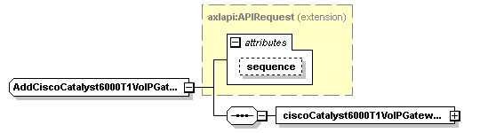
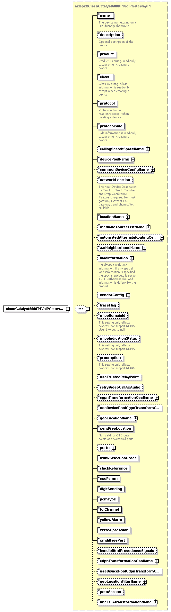

| diagram |  | ||||||||||||
| namespace | http://www.cisco.com/AXL/API/10.5 | ||||||||||||
| type | extension of axlapi:APIRequest | ||||||||||||
| properties |
|
||||||||||||
| children | ciscoCatalyst6000T1VoIPGatewayT1 | ||||||||||||
| used by |
|
||||||||||||
| attributes |
|
||||||||||||
| source | <xsd:complexType name="AddCiscoCatalyst6000T1VoIPGatewayT1Req"> <xsd:complexContent> <xsd:extension base="axlapi:APIRequest"> <xsd:sequence> <xsd:element name="ciscoCatalyst6000T1VoIPGatewayT1" type="axlapi:XCiscoCatalyst6000T1VoIPGatewayT1"/> </xsd:sequence> </xsd:extension> </xsd:complexContent> </xsd:complexType> |
| diagram |  | ||
| type | axlapi:XCiscoCatalyst6000T1VoIPGatewayT1 | ||
| properties |
|
||
| children | name description product class protocol protocolSide callingSearchSpaceName devicePoolName commonDeviceConfigName networkLocation locationName mediaResourceListName automatedAlternateRoutingCssName aarNeighborhoodName loadInformation vendorConfig traceFlag mlppDomainId mlppIndicationStatus preemption useTrustedRelayPoint retryVideoCallAsAudio cgpnTransformationCssName useDevicePoolCgpnTransformCss geoLocationName sendGeoLocation ports trunkSelectionOrder clockReference csuParam digitSending pcmType fdlChannel yellowAlarm zeroSupression smdiBasePort handleDtmfPrecedenceSignals cdpnTransformationCssName useDevicePoolCdpnTransformCss geoLocationFilterName pstnAccess imeE164TransformationName | ||
| source | <xsd:element name="ciscoCatalyst6000T1VoIPGatewayT1" type="axlapi:XCiscoCatalyst6000T1VoIPGatewayT1"/> |